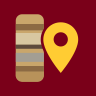

CSD Container Tracker
Opening the tracker…
Open the trackerTo put the tracker on your home screen:
- iPhone, in Safari: tap Share, then Add to Home Screen. Turn off Open as Web App, so the tracker opens in Safari, where you are already signed in to Google. Tap Add.
- Android, in Chrome: tap the ⋮ menu, then Add to Home screen.
From then on, open the tracker from the new icon.
Open the tracker nowThe tracker's address has not been filled in on this page yet. In this file, put the web app link (Deploy > Manage deployments, the one ending in /exec) where it says APP.